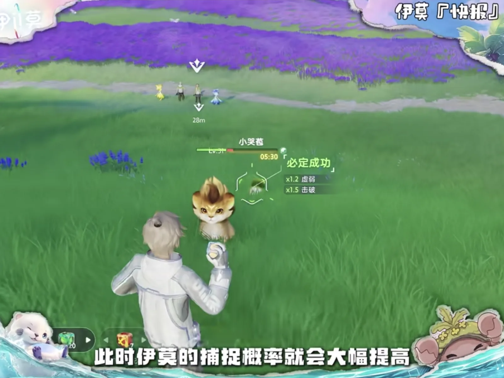
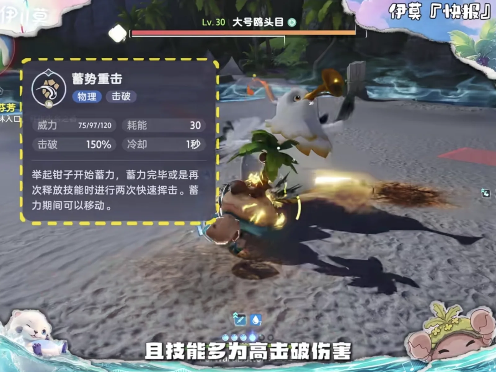
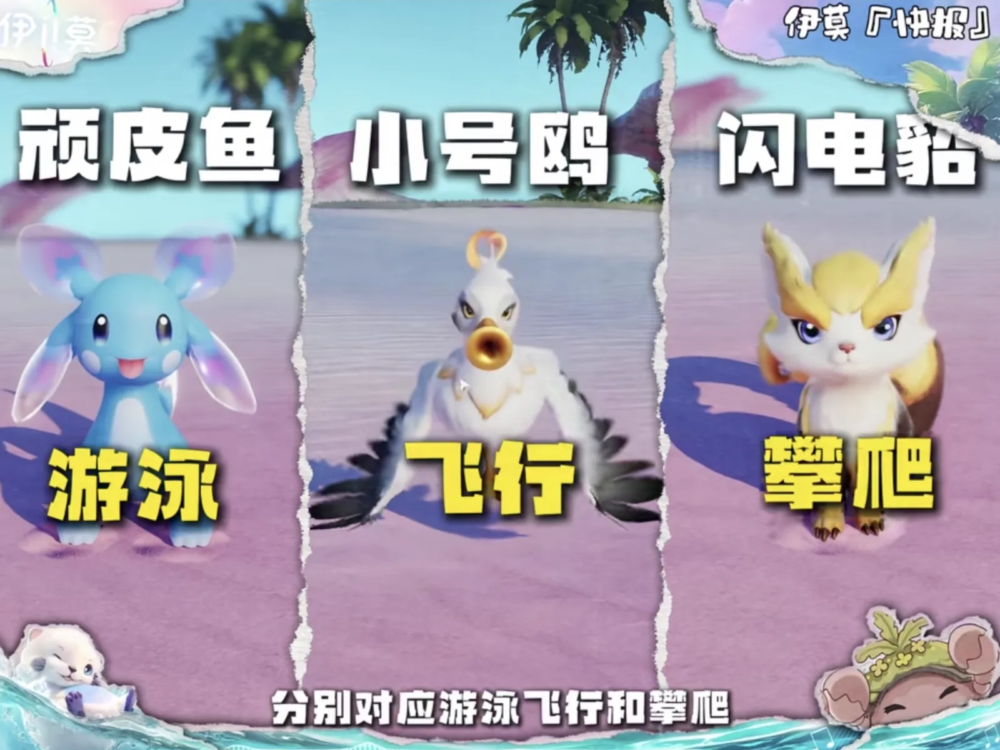
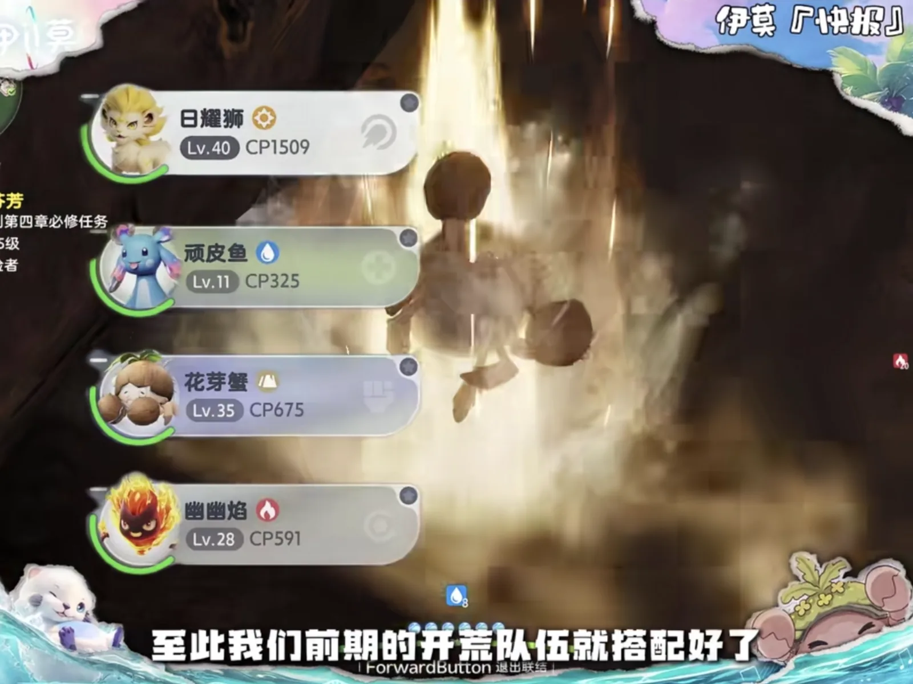
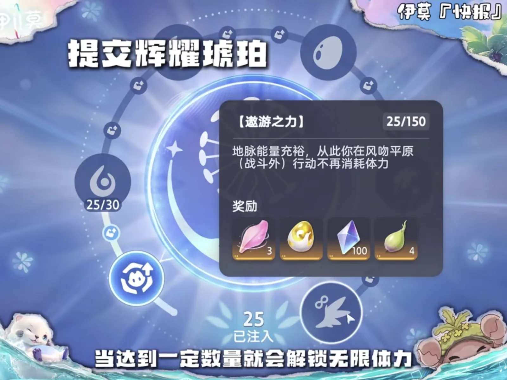
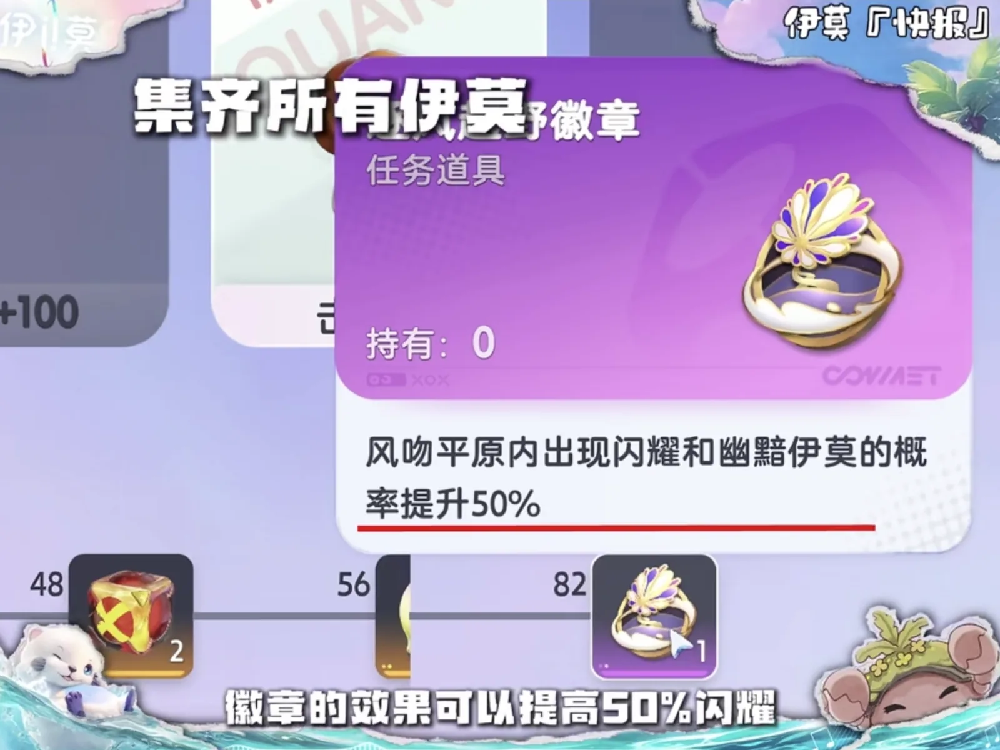

Home首页 / Guides攻略 / The First Day of Aniimo: Pick a Starter, Fill the Travel Team, and Do Not Sit on the Three-Day Quest新手第一天怎么玩：初始宠二选一，跑图队先配齐，限时任务别拖过三天
Checked核对于 October 9, 20262026 年 10 月 9 日
The First Day of Aniimo: Pick a Starter, Fill the Travel Team, and Do Not Sit on the Three-Day Quest新手第一天怎么玩：初始宠二选一，跑图队先配齐，限时任务别拖过三天
What to do with the first day of Aniimo: which starter to take, how catching and the break gauge actually work, which four Aniimo to build first, and why the day is in that order.开服第一天该按什么顺序走：初始宠怎么选、捕捉和击破条怎么用、开荒和跑图各配哪几只，以及这一天里每一步为什么排在那个位置。
The first few hours on a new server decide whether the next few days go smoothly or keep stalling. The order is not complicated: settle which starter you are taking, catch the travel team while the map is still small, then push the main story with the map opening up around you. Catching and combat are the two systems worth understanding first — get those two, and every step after them costs less.开服第一天的几个小时，基本决定你后面几天是顺水推舟还是处处卡壳。顺序其实不复杂：先定下初始宠，再把跑图队抓齐，然后一边推主线一边开图。捕捉和战斗这两个机制先弄懂，之后每一步都能省下时间。
The starter: Helion or Lunara初始宠：日耀狮还是月辉狐
The first thing the game asks is which of the two Light starters you want. Helion (Holy · DPS) is melee and leans on PVE burst — it can hold down a Light party as the damage dealer, and the price is a thin margin for error. Lunara (Holy · DPS) is ranged and leans PVP: even across the board and comfortable to kite with, but it has no burst of its own. You only get one of the two, so decide whether you are here for PVE or PVP before you click.进游戏第一件大事就是日月初始宠二选一。日耀狮（Helion，光 · 输出）是近战，偏 PVE 爆发，能当光队主 C，短板是容错率低；月辉狐（Lunara，光 · 输出）是远程，偏 PVP，胜在均衡全面、方便拉扯，但缺一手爆发。两只里你只能拿到其中一只，所以先想清楚自己要打 PVE 还是 PVP 再点。
Catching: take the health down, then break it抓宠：先压血，再打晕
Against a high-level Aniimo, two steps take the catch rate as high as it goes. The first is health — the lower the target's HP, the better the odds. The second is the Break state: the gauge under the target's health bar empties, the Aniimo is stunned, and the catch rate jumps. Those two multipliers stack, and they are the only two that stack in combat. Everything else is an out-of-combat bonus, and those stack with any other out-of-combat bonus.面对高等级的伊莫，把捕捉概率拉满靠两步。第一步是压血，血量越低，捕捉概率越高。第二步是击破状态：攻击的时候能看见对方血条下面的击破条，击破条一清零，伊莫就会眩晕，捕捉概率大幅提高。这两个概率可以叠加，而且是战斗中唯一能叠加的两种。除此之外还有一些只在非战斗状态下生效的捕捉加成，它们能和任何其他非战斗加成叠加。

Combat: the break gauge decides the damage战斗：击破条决定伤害
The break gauge is not a catching tool only — bosses and ordinary Aniimo both carry one. While it is up, the damage you deal is cut; once it empties and the target is stunned, the damage in that window goes up sharply. That is why a fight usually opens with a Break Aniimo: they run high on health and their skills are mostly break damage, so they can put the target down quickly and let the damage dealer follow. One more thing to hold on to — the bar under the health bar is your own energy, casting spends it, and the whole party shares the one pool. Do not burn it all on whoever goes out first, and leave enough for the Aniimo coming on behind.击破条不只是捕捉时有用，Boss 和普通伊莫身上都带着它。击破条还在的时候，你打出去的伤害会被削减；一旦清零、伊莫进入眩晕，这段时间造成的伤害会大幅提升。所以实战里一般先用击破型伊莫起手 —— 这类伊莫血量偏高，技能多是高击破伤害，能很快把对面打晕，好让主 C 跟上输出。还要记住，血条下面那条是自己的能量值，放技能要消耗能量，而且是全队共用，别前面一股脑用光，记得给后面上场的伊莫留够。

The travel team: three Aniimo, three traversal skills跑图队：三只技能顶三个位置
Parties come in two kinds, battle and travel, and the Aniimo bag has an entrance for each in its top right corner: Battle and Action. Open Action and you can build a dedicated travel team, which sets out on its own when the occasion calls for it, so you never switch back and forth by hand. The three to build are Pranky for swimming, Cornet for flying and Bolty for climbing, and each of them has that skill at level two; for land you can take a 竹虫 as it is and the four traversal skills are covered. Where they come from: Pranky in the river channels of Nimbus Fields, Cornet on the beach in the Forest of Falling Stars, Bolty in Blitzwood. One name there has no page on this site to check it against — 竹虫 is not one of the 86 species we cover.编队分战斗和跑图两套，在伊莫背包右上角能看到「战斗」和「行动」两个入口，打开行动就能配专门的跑图队，需要的时候会自动出发，不用来回切。跑图队推荐 顽皮鱼（Pranky，水 · 治疗）负责游泳，小号鸥（Cornet，风 · 输出）负责飞行，闪电貂（Bolty，电 · 击破）负责攀爬，这三只的能力值都是两级；陆地上直接带竹虫，四大跑图技能就齐了。它们的捕捉地点分别是：云上草原的河道抓顽皮鱼，星落林的沙滩抓小号鸥，闪电之森抓闪电貂。名单里有一个名字在本站查不到出处 —— 竹虫不在这 86 只图鉴里。

The starting party: one damage dealer and three jobs开荒队：一只主 C 带三只功能位
The battle party has to cover PVE and the open world's elemental interactions at the same time. The damage dealer is the starter you picked; Pranky (Water · Heal) is the healer and the one who tops the party up; Budclaw (Rock, Grass · Break) takes the hits and covers the break slot on the side; Sparki (Fire · Regen) is there for energy. Built this way, the early bosses stop being a problem, and the elemental interactions exploration asks for are already in the party — one set of Aniimo fits most of what you meet, with no switching back and forth.战斗编队要同时兼顾 PVE 和大世界的元素交互。主 C 交给开局选的主宠，顽皮鱼（Pranky，水 · 治疗）当奶妈负责回血，花芽蟹（Budclaw，土、草 · 击破）扛肉盾、顺带顶一下击破位，幽幽焰（Sparki，火 · 回能）做回能辅助。这样配下来，前期的 boss 基本都能随便过；大世界探索要用到的元素交互，也不用反复切队，一套伊莫就能适配大部分情况。

The day itself: travel first, then the story流程：先跑图，再主线
Once the tutorial is done and you can move freely, the first errand is to catch the travel Aniimo — travel gets so much faster with them that everything afterwards is measured against it. With the travel team built, go back to the story and level. The first time the day gates you on level, go straight to Beast Fang Ridge, set the time to night, and take the Warrior quest at the campfire. That quest is the one condition for a Break-role Inferlupa, and it runs to a three-day clock — one step per server reset, every step at night — so do not waste the first day. Finish it inside three days of launch and Inferlupa is yours.过完新手任务、能自由行动之后，第一时间把跑图伊莫抓齐，跑图效率会高一大截。跑图队配好，接着做主线升级。第一天卡等级的时候，立刻去狼牙岭，把时间调到晚上，到篝火处接斗士任务（Warrior）。这个任务是拿到击破系狱魂狼的必要条件，而且要分三天限时完成 —— 每天服务器重置才推进一步，每一步都在夜里 —— 所以第一天千万别浪费，开服三天做完就能入手 狱魂狼（Inferlupa，火、暗 · 击破）。
After that, spend the time opening the map — it is the groundwork for everything later — and pick up every Lumin Amber you pass. Amber is handed in at the bottom right of the map, and it goes onto a fixed ladder: one node for every 10 infused, several of which add 10% to your stamina cap each, with the one players call unlimited stamina at 150 — out-of-combat movement in Breezy Plains stops costing stamina. Amber is locked to a region, so what you pick up in one place only feeds that place's Branch. Infuse what you are carrying before you leave an area; the alternative is walking back.之后的时间优先开图，给后面铺路，顺手把沿路的辉耀琥珀（Lumin Amber）全部收集起来。琥珀在地图右下角提交，走的是 Branch 那条固定阶梯 —— 每注入 10 个开一个节点，中间好几档各加 10% 体力上限，而玩家说的「无限体力」是 150 那一档：在风吻平原的战斗外行动不再消耗体力。琥珀锁地区，在哪儿捡的只能喂哪儿的 Branch，所以走之前先把手上的交掉，不然代价就是走回来一趟。

The end goal is the whole dex — every Aniimo in it, and the last badge that comes with finishing it. That badge raises the odds of Sparkling and Umbral Aniimo appearing by 50% inside Breezy Plains, which is worth going out of your way for.最终目的是集齐图鉴里所有伊莫，领最后那枚徽章。徽章的效果是在风吻平原范围内，把闪耀（Sparkling）和幽黯（Umbral）伊莫的出现几率提高 50%，值得专门去凑。

Three things not to skip别漏掉的几件事
- If one of your party members has an Alpha out on the map, catch that one with an Aniipod Ultra and use it for now — an Alpha's core skills upgrade without spending items, which saves a real amount of material.队伍里的伊莫如果在地图上有头目形态，建议直接用冠军立方抓一只先凑合用 —— 这种头目伊莫的核心技能不用消耗道具就能升级，能省下不少重要资源。
- Do the daily quests. They pay a lot of experience, and experience is the gate you keep running into.每天的每日任务尽量都做完，给的经验非常多。
- Collect the weekly badges. They exchange for materials in bulk.每周的徽章尽量集齐，可以兑换到大量资源。
The first day, in order第一天的顺序
The order once more: catch the travel Aniimo and build the travel team, so that every walk afterwards is shorter; go back to the story and level, and the moment it gates you, take the Warrior quest at Beast Fang Ridge and start its three days; spend everything left on opening the map and on picking up Amber as you pass. Which starter you took and how you laid out the party are both in service of that line — the first day is about getting the base down, and everything after it is faster for it.把顺序再捋一遍：先抓跑图伊莫、配好跑图队，让后面每一次赶路都省力；再沿着主线升级，卡等级就去狼牙岭接上那三天限时的斗士任务；剩下的时间全部用来开图，顺手把辉耀琥珀收满。初始宠选哪只、队伍怎么排，都是为了这条线服务 —— 第一天把基础打牢，后面刷起来才快。